Appendix#
GPU virtualization and fractional GPU allocation#
Backend.AI supports GPU virtualization technology which allows single physical GPU can be divided and shared by multiple users simultaneously. Therefore, if you want to execute a task that does not require much GPU computation capability, you can create a compute session by allocating a portion of the GPU. The amount of GPU resources that 1 fGPU actually allocates may vary from system to system depending on administrator settings. For example, if the administrator has set one physical GPU to be divided into five pieces, 5 fGPU means 1 physical GPU, or 1 fGPU means 0.2 physical GPU. If you set 1 fGPU when creating a compute session, the session can utilize the streaming multiprocessor (SM) and GPU memory equivalent to 0.2 physical GPU.
In this section, we will create a compute session by allocating a portion of the GPU and then check whether the GPU recognized inside the compute container really corresponds to the partial physics GPU.
First, let's check the type of physical GPU installed in the host node and the amount of memory. The GPU node used in this guide is equipped with a GPU with 8 GB of memory as in the following figure. And through the administrator settings, 1 fGPU is set to an amount equivalent to 0.5 physical GPU (or 1 physical GPU is 2 fGPU).

Now let's go to the Sessions page and create a compute session by allocating 0.5 fGPU as follows:
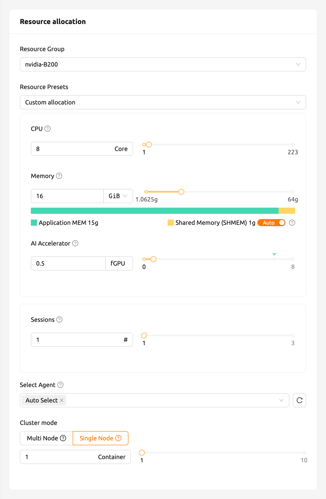
In the AI Accelerator panel of the session list, you can see that 0.5 fGPU is allocated.
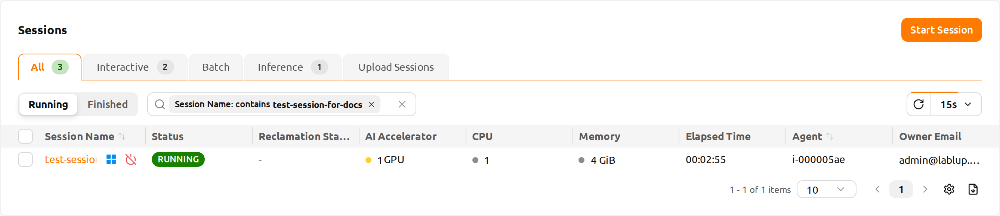
Now, let's connect directly to the container and check if the allocated GPU
memory is really equivalent to 0.5 units (~2 GB). Let's bring up a web
terminal. When the terminal comes up, run the nvidia-smi command. As you can
see in the following figure, you can see that about 2 GB of GPU memory is
allocated. This shows that the physical GPU is actually divided into quarters and allocated inside the
container for this compute session, which is not possible by a way like PCI passthrough.

Let's open up a Jupyter Notebook and run a simple ML training code.

While training is in progress, connect to the shell of the GPU host node and
execute the nvidia-smi command. You can see that there is one GPU attached
to the process and this process is occupying about 25% of the resources of the
physical GPU. (GPU occupancy can vary greatly depending on training code and GPU
model.)

Alternatively, you can run the nvidia-smi command from the web terminal to query the GPU usage history inside the container.
Automated job scheduling#
Backend.AI server has a built-in self-developed task scheduler. It automatically checks the available resources of all agent nodes and delegates the request to create a compute session to the agent that meets the user's resource request. In addition, when resources are insufficient, the user's request to create a compute session is registered as a PENDING state in the job queue. Later, when the resources become available again, the pended request is resumed to create a compute session.
You can check the operation of the job scheduler in a simple way from the user WebUI. When the GPU host can allocate up to 2 fGPUs, let's create 3 compute sessions at the same time requesting allocation of 1 fGPU, respectively. In the Environments & Resource Allocation step of the session launcher, set AI Accelerator to 1. Then, on the Confirm and Launch step, open the menu next to the Launch button and select Launch Multiple Sessions. Set Number of sessions to 3 and click Start, and the three sessions are requested at the same time. This is the situation that 3 sessions requesting a total of 3 fGPUs are created when only 2 fGPUs exist.
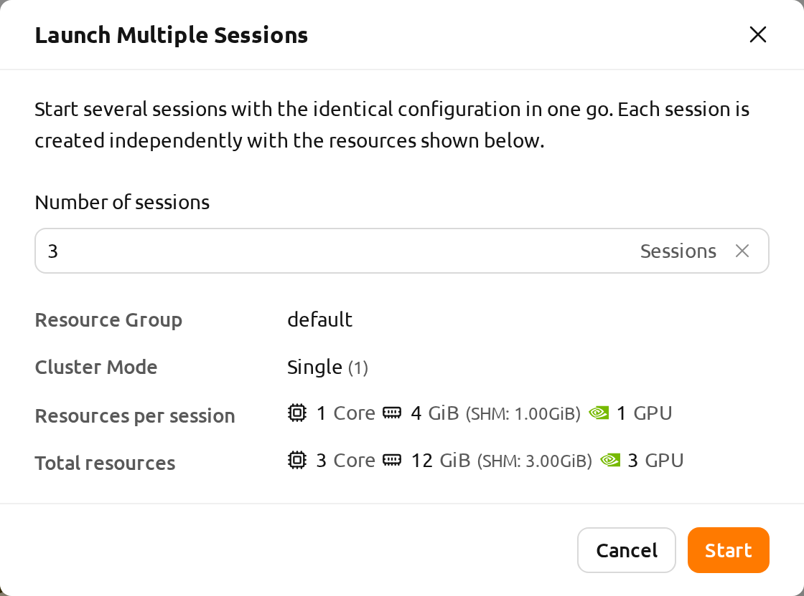
Wait for a while and you will see three compute sessions being listed. If you look closely at the Status panel, you can see that two of the three compute sessions are in RUNNING state, but the other compute session remains in PENDING state. This PENDING session is only registered in the job queue and has not actually been allocated a container due to insufficient GPU resources.
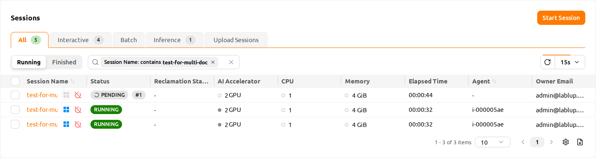
Now let's destroy one of the two sessions in RUNNING state. Then you can see that the compute session in PENDING state is allocated resources by the job scheduler and converted to RUNNING state soon. In this way, the job scheduler utilizes the job queue to hold the user's compute session requests and automatically process the requests when resources become available.
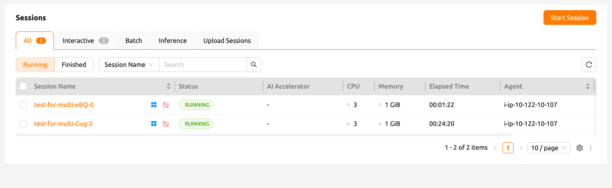
Multi-version machine learning container support#
Backend.AI provides variaous pre-built ML and HPC kernel images. Therefore, users can immediately utilize major libraries and packages without having to install packages by themselves. Here, we'll walk through an example that takes advantage of multiple versions of the multiple ML library immediately.
Go to the Sessions page and open the session launch dialog. There may be various kernel images depending on the installation settings.
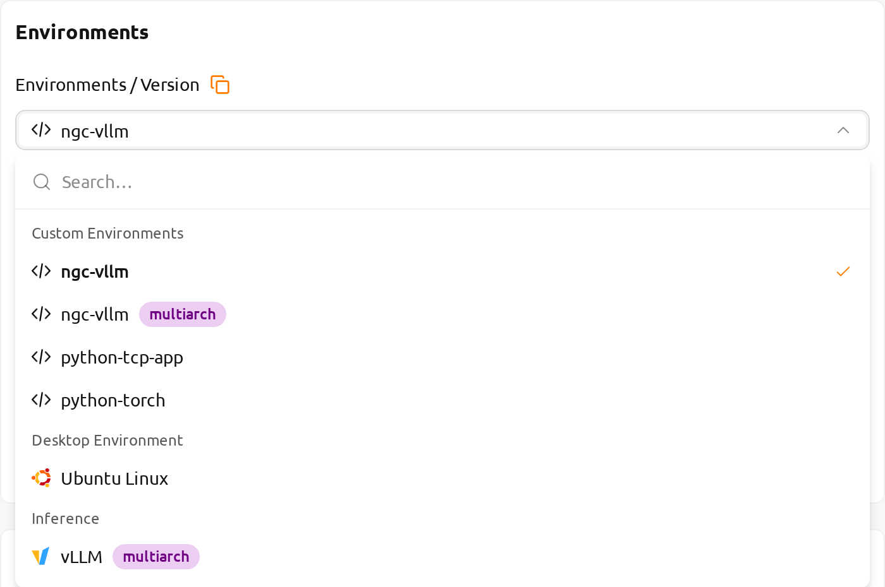
Here, let's select the TensorFlow 2.3 environment and created a session.
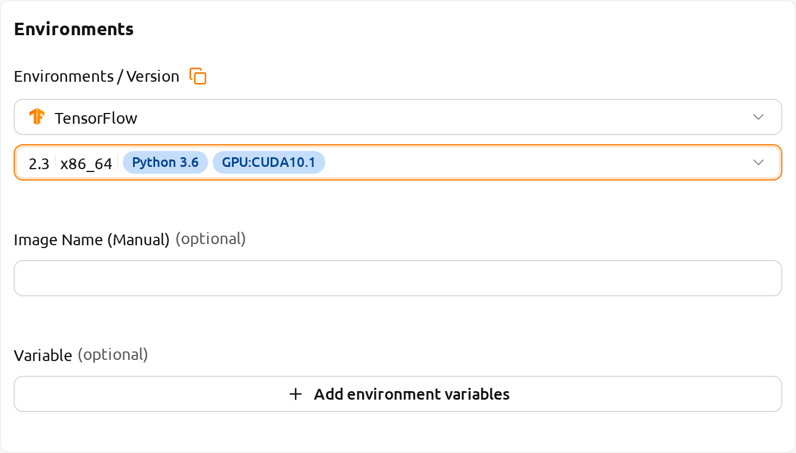
Open the web terminal of the created session and run the following Python command. You can see that TensorFlow 2.3 version is installed.

This time, let's select the TensorFlow 1.15 environment to create a compute session. If resources are insufficient, delete the previous session.
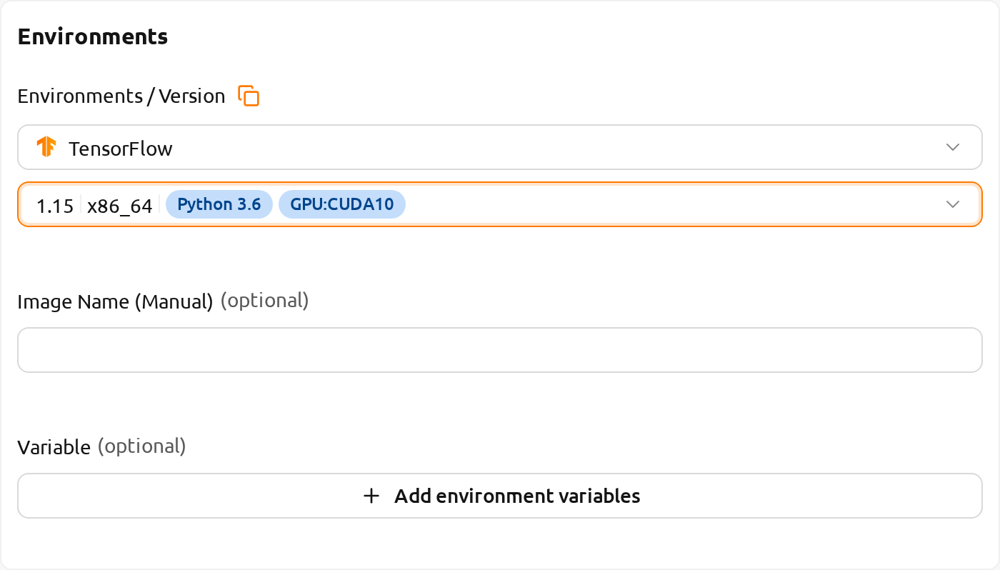
Open the web terminal of the created session and run the same Python command as before. You can see that TensorFlow 1.15(.4) version is installed.

Finally, create a compute session using PyTorch version 1.9.
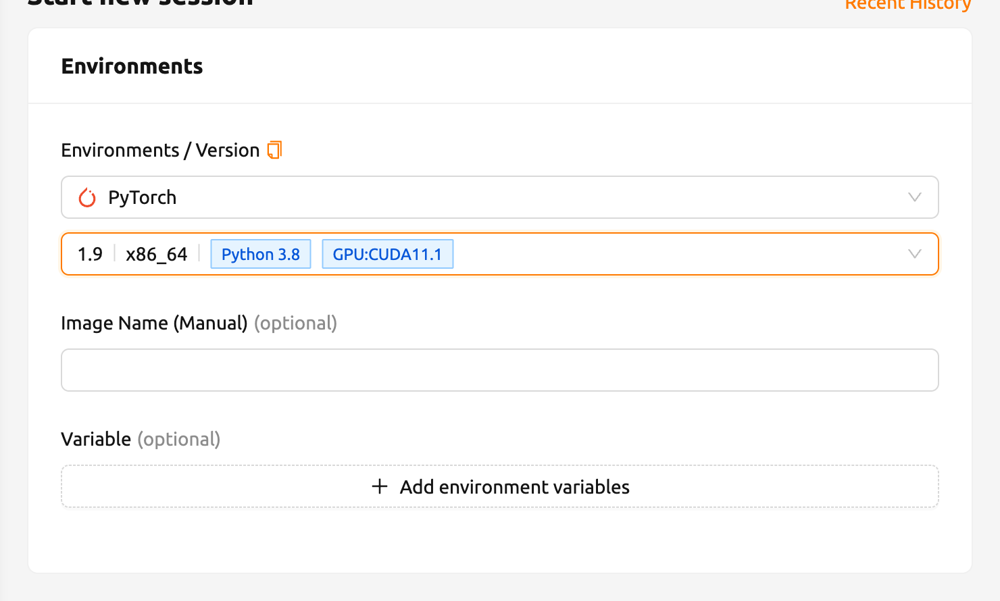
Open the web terminal of the created session and run the following Python command. You can see that PyTorch 1.9 version is installed.
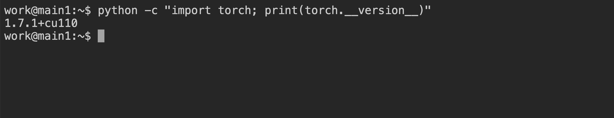
Like this, you can utilize various versions of major libraries such as TensorFlow and PyTorch through Backend.AI without unnecessary effort to install them.
Convert a compute session to a new private Docker image#
If you want to convert a running compute session (container) to a new Docker image that you can use later to create a new compute session, you need to prepare your compute session environment and ask administrators to convert it.
- First, prepare your compute session by installing the packages that you need and adjust the configurations as you like.
If you want to install OS packages, for example via apt command, it
usually requires the sudo privilege. Depending on the security policy
of the institute, you may not be allowed to use sudo inside a
container.
It is recommended to use automount folder to
install Python packages via pip. However, if you
want to add Python packages in a new image, you should install them with
sudo pip install <package-name> to save them not in your home but in
the system directory. The contents in your home directory, usually
/home/work, are not saved in converting a compute session to a new
Docker image.
When your compute session is prepared, please ask an administrator to convert it to a new Docker image. You need to inform them the session name or ID and your email address in the platform.
The administrator will convert your compute session to a new Docker image and send you the full image name and tag.
You can manually enter the image name in the session launch dialog. The image is private and not be revealed to other users
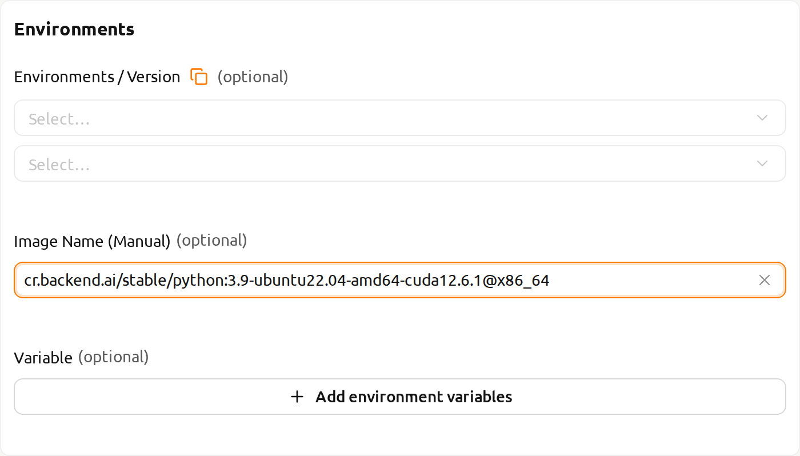
Figure 26.17 A new compute session will be created using the new Docker image.
Backend.AI server installation guide#
For Backend.AI Server daemons/services, following hardware specification should be met. For optimal performance, just double the amount of each resources.
- Manager: 2 cores, 4 GiB memory
- Agent: 4 cores, 32 GiB memory, NVIDIA GPU (for GPU workload), > 512 GiB SSD
- Webserver: 2 cores, 4 GiB memory
- App Proxy: 2 cores, 4 GiB memory
- PostgreSQL DB: 2 cores, 4 GiB memory
- Redis: 1 core, 2 GiB memory
- Etcd: 1 core, 2 GiB memory
The essential host dependent packages that must be pre-installed before installing each service are:
- WebUI: Operating system that can run the latest browsers (Windows, Mac OS, Ubuntu, etc.)
- Manager: Python (≥3.8), pyenv/pyenv-virtualenv (≥1.2)
- Agent: docker (≥19.03), CUDA/CUDA Toolkit (≥8, 11 recommend), nvidia-docker v2, Python (≥3.8), pyenv/pyenv-virtualenv (≥1.2)
- Webserver: Python (≥3.8), pyenv/pyenv-virtualenv (≥1.2)
- App Proxy: docker (≥19.03), docker-compose (≥1.24)
- PostgreSQL DB: docker (≥19.03), docker-compose (≥1.24)
- Redis: docker (≥19.03), docker-compose (≥1.24)
- Etcd: docker (≥19.03), docker-compose (≥1.24)
For Enterprise version, Backend.AI server daemons are installed by Lablup support team and following materials/services are provided after initial installation:
- DVD 1 (includes Backend.AI packages)
- User GUI Guide manual
- Admin GUI Guide manual
- Installation report
- First-time user/admin on-site tutorial (3-5 hours)
Product maintenance and support information: the commercial contract includes a monthly/annual subscription fee for the Enterprise version by default. Initial user/administrator training (1-2 times) and wired/wireless customer support services are provided for about 2 weeks after initial installation, minor release updater support and customer support services through online channels are provided for 3-6 months. Maintenance and support services provided afterwards may have different details depending on the terms of the contract.
Integration examples#
In this section, we would like to introduce several common examples of applications, toolkits, and machine learning tools that can be utilized on the Backend.AI platform. Here, we will provide explanations of the basic usage of each tool and how to set them up in the Backend.AI environment, along with simple examples. We hope this will help you choose and utilize the tools you need for your projects.
Please note that the content covered in this guide is based on specific versions of the programs, so the usage may vary in future updates. Therefore, please use this document for reference and also check the latest official documentation for any changes. Now, let's take a look at the powerful tools available for use on Backend.AI one by one. We hope this section will serve as a useful guide for your research and development.
Using MLFlow#
There are many executable images in Backend.AI supports MLFlow and MLFlow UI as built-in app. But in order to execute it, you may need extra procedures. By following instructions below, you will be able to track parameters and result at Backend.AI as if you are using it on your local environment.
In this section, we will regard you already created session and about to execute an app in the session. If you don't have any experience in creating session and executing app inside, please have a look through How to create a session section.
First, launch the terminal app Console and execute the command below. It will start the MLflow Tracking UI server.
mlflow ui --host 0.0.0.0Then, Click "MLFlow UI" app in app launcher dialog.
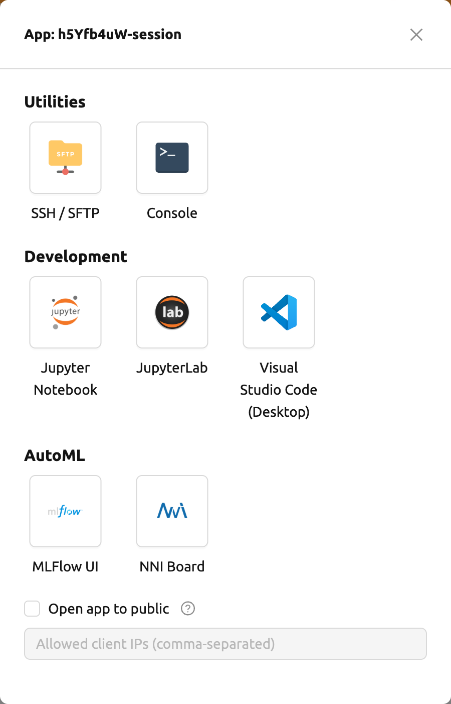
After few moment, you will see a new page for MLFlow UI.

By using MLFlow, you can track experiments, such as metrics and parameters every time you run. Let's start tracking experiments from simple example.
wget https://raw.githubusercontent.com/mlflow/mlflow/master/examples/sklearn_elasticnet_diabetes/linux/train_diabetes.py
python train_diabetes.pyAfter executing python code, you may see the experiments result in MLFlow.
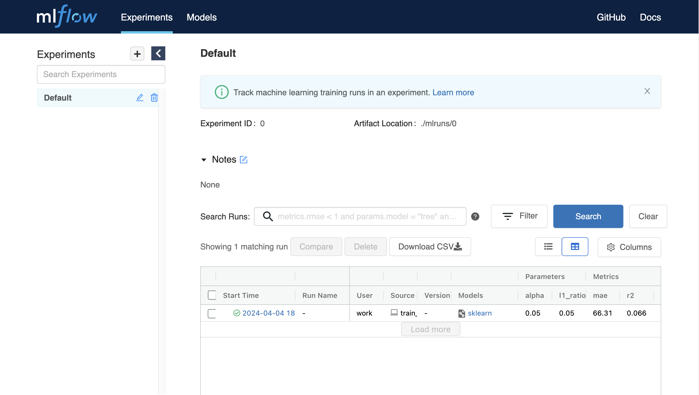
You can also set hyperparameter by giving arguments with code execution.
python train_diabetes.py 0.2 0.05After a few training, you can compare trained models with results.
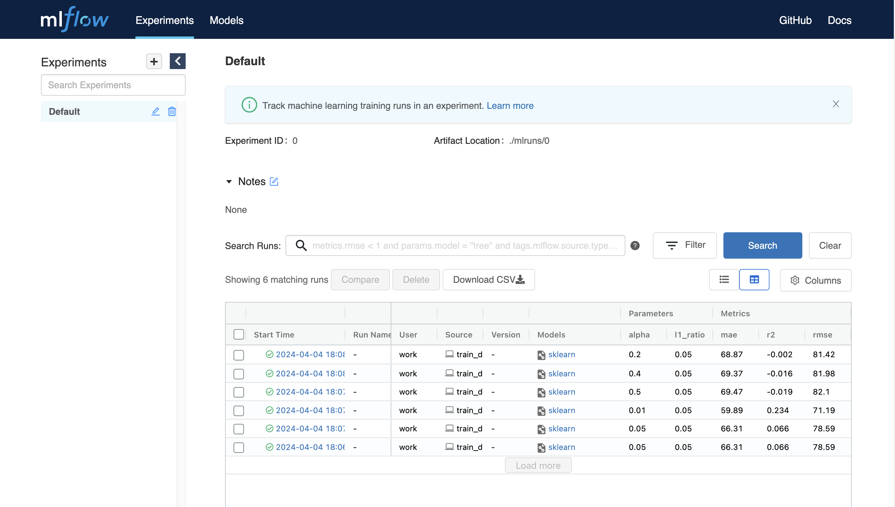